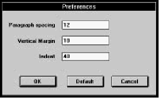
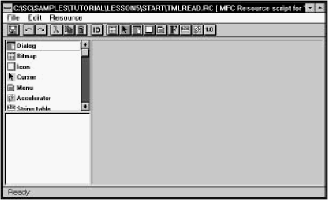
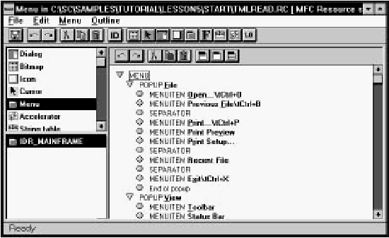
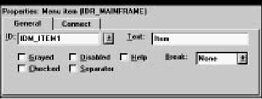
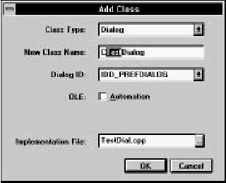
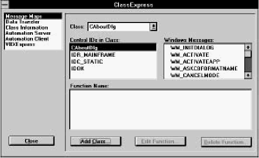
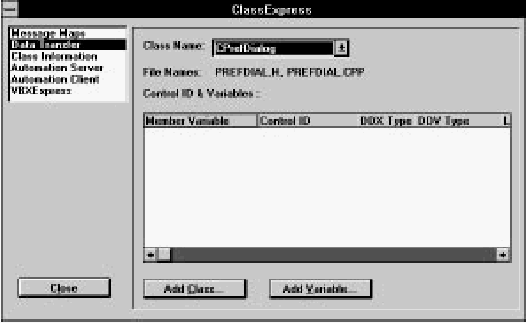
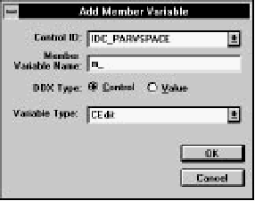
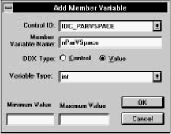
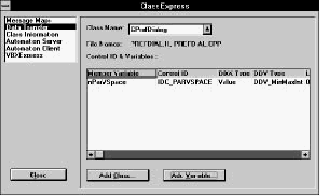

IDDE
Reference
Part 1: Welcome to Digital Mars C++
1. Introducing Digital Mars C++
2. Introducing the IDDE
Part 2: Creating an Application with Digital Mars C++
3. Starting a Project and Defining Workspaces
4. Generating an Application Framework
5. Defining Classes and Their Hierarchies
6. Editing Program Code
7. Adding Look and Feel with Resources
8. Testing an Application
Part 3: Learning Digital Mars C++ by Example
9. Introduction to the Tutorial
10. Lesson 1: Create the DOS Application
11. Lesson 2: Generate an Application Framework
12. Lesson 3: Customize the Interface
13. Lesson 4: Add Messages with ClassExpress
14. Lesson 5: Add a Dialog Box with ClassExpress
Part 4: More about Creating Programs
15. More about Projects and Workspaces
16. More about Project Build Settings
17. More about AppExpress
18. More about ClassExpress
19. Class Editor Reference
20. Hierarchy Editor Reference
21. Text Editor Reference
22. Using Version Control
Part 5: More about Testing Programs
23. Controlling and Configuring the Debugger
24. Commands Available in Debugging Mode
Part 6: About Managing Resources
25. ResourceStudio Resource Editor
26. Dialog Editor
27. Menu, Accelerator and String Table Editors
28. Bitmap, Cursor, Icon, and Font Editors
29. Version Information and Custom Resource Editors
Part 7: Appendixes
A. Expression Evaluation
B. IDDE Settings and Command-Line Options
C. Using NetBuild
|
14. Lesson 5: Add a Dialog Box with ClassExpress
In Lesson 4, you learned how to use ClassExpress to add handlers for
Windows messages. The application from that lesson is still skeletal.
Its interface is complete, and it receives the Windows messages it
needs to act upon, but every user action ultimately results in a call to
a stub function. After completing Lesson 4, the next step is writing
code that supplies functionality.
This lesson shows you how to use some additional, powerful
features of Digital Mars C++. To accomplish this, a body of code that
supplies some substantial functionality has been added to the
application you built in Lesson 4. In between the end of Lesson 4
and the start of this lesson, only the Source window has been used
to create or change C++ files in the project. That is, none of the new
code has been automatically generated; it has all been manually
entered.
Start this lesson with the project
samples\tutorial\lesson5\start\tmlread.prj,
located in the directory where you installed
Digital Mars C++. The first task you will perform is to build that project.
Once you have done so, you will have a fully functional TML
Reader.
In the remainder of the lesson, you will implement a Preferences
dialog box. In addition to supplying C++ code for the start of this
lesson, we have also already used ResourceStudio to create a dialog
resource that defines the Preferences dialog box. However, this
dialog box is not yet connected to the application. It lies dormant
within tmlread.rc. You will perform all the tasks necessary to
animate it and make it fully functional.
Specifically, you'll use ResourceStudio to:
- Add a new menu item for invoking the Preferences
dialog box
- Launch ClassExpress
Within ClassExpress, you'll:
- Create a new class that represents the Preferences
dialog box
- Add a handler for the new menu item
- Add a handler to this new class for one of the buttons in
the dialog box
- Add data members to the new class that transfer
information between the application's data and the
controls in the dialog box. You will also specify
validation criteria for the values that the user enters in
the dialog box, so that MFC can perform automatic data
validation.
Finally, within the IDDE, you will:
- Add code for the two new handlers
- Rebuild the project and examine the results of your
efforts
After completing this lesson, you will have:
- Added a new menu command
- Used MFC and ClassExpress to implement a dialog box,
validate its data, and exchange data between the dialog
box and your application
The next section walks you through building and running the TML
Reader. It also discusses how the Reader displays files and how to
create a Preferences dialog box which lets the user configure how
the files are displayed.
Building and Exploring the TML Reader
This section acquaints you with the major features of the TML
Reader. After building the Reader, you will use it to read sample files
that contain TML formatting strings.
Before building the Reader, you must first copy the file
viewhdrs.h from the tutorial\tmlread directory to the
tutorial\lesson5\backup directories. Various TMLRead
modules include this header file, and cannot be compiled without it.
Building the Reader
Follow the first four steps to build the TML Reader.
- If you are not already in the IDDE, launch it.
- Open the project tmlread.prj in the directory
samples\tutorial\lesson5\start located
beneath the directory where you installed Digital Mars C++.
- Choose Build from the Project menu.
- Choose Execute Program from the Project menu to run
the program. The IDDE minimizes, and TMLRead is
launched. No file is yet displayed.
Exploring the capabilities of the Reader
Now use the Reader to browse two sample files that illustrate the
kinds of formatting that the Reader can display.
- Choose Open from TMLRead's File menu.
- In the File Open dialog box, select the file
sample.tml in the
samples\tutorial\lesson5\start directory,
then click OK. TMLRead reads, parses, and displays the
file.
- Scroll within the document using the arrow keys and the
Page Up and Page Down keys. Code within
CTMLReadView::OnKeyDown causes the scrolling to
occur.
- Now scroll by using the vertical scroll bar. In this case,
code within CTMLReadView::OnVScroll is
responsible for the scrolling.
- Drag either the left or right border of the window to
resize it. Notice that the ends of lines are automatically
adjusted so that paragraphs wrap properly, filling almost
all of the window's width. The handler
CTMLReadView::OnSize causes rewrapping to occur.
- If you are not now displaying the beginning of the file,
press the Home key. The heading "Contents" announces
the table of contents of this document, presented as a
hierarchical bulleted list of the major sections of
sample.tml. Each line in the table of contents is
underlined and displayed in green. These properties of
the text indicate that it is a hyperlink. Place the cursor
over any hyperlink; the cursor changes to a hand with an
extended index finger, a visual cue that you can
meaningfully click on the text. Move the cursor so that it
is not over a hyperlink; the cursor reverts to the default
cursor. This behavior is provided by
CTMLReadView::OnSetCursor after a necessary
initialization by CTMLReadView::PreCreateWindow.
- Click on the last hyperlink in the Contents section,
named "Hyperlinks," with the left mouse button. This
displays the last section of the file. The method
CTMLReadView::OnLButtonDown handles the mouse
click by determining whether or not it occurred on a
hyperlink; if a hyperlink is clicked, the jump occurs.
- At the end of the last paragraph, there is the following
hyperlink phrase: "here is a link to another sample
document." Click on this phrase. The file complex.tml
is read and displayed. Again,
CTMLReadView::OnLButtonDown causes the jump to
occur.
- Choose Previous File from TMLRead's File menu to
return to sample.tml.
- Examine each section of sample.tml by clicking each
hyperlink in the document's contents at the top of the
file. This will give you a good sense of the features of
TML, the subset of HTML (HyperText Markup Language)
recognized by the Reader.
- Choose Print Preview from TMLRead's File menu to see
a WYSIWYG display of how sample.tml would look if
it were printed on the current default printer. The
presence and functionality of the buttons at the top of
the Print Preview window has been supplied almost
entirely by MFC. When you finish looking at the Print
Preview display, click Close to return to the main view of
the Reader.
- Choose Exit from TMLRead's File menu. This closes the
Reader and returns you to the IDDE.
Turning aspects of the Reader's display into preferences
A few numerical quantities that help determine how TMLRead
displays documents are at present hard-coded. These numbers are
stored as int data members of CTMLReadView and are described
in the following table:
- nParVSpace
- Vertical space between paragraphs
- nMargin
- Amount of horizontal space between the document and
the edges of the window
- nIndent
- Amount by which items in a list are offset from the left margin
The CTMLReadView constructor calls
CTMLReadView::SetDefaultPrefs to initialize these data
members with default values provided by the following enum
constants (defined in the class declaration):
eDftParVSpace = 12
eDftMargin = 10
eDftIndent = 40
The Preferences dialog box lets the user alter these values, as
shown in Figure 14-1.

[Figure 14-1 The Preferences dialog box]
Of course, the user should be allowed to configure many other
aspects of the Reader's display, such as colors and fonts. However,
implementing this simple Preferences dialog box gives you the
fundamental skills needed to realize more ambitious designs using
the Digital Mars C++ tools.
Before you connect the Reader's data with the controls of the
Preferences dialog box, you need to first outfit the user interface
with a way to call the dialog box. In the next section, therefore,
you'll use ResourceStudio to add a menu item to TMLRead.
Using ResourceStudio to Add a Menu Item
To add a Preferences item to the View menu of TMLRead, launch
ResourceStudio from within the IDDE so that it loads tmlread.rc.
To do this, follow these steps:
- Open the Project window if it is not already open.
- Double-click on tmlread.rc in the Project window.
When asked if you want to use ResourceStudio to edit
this file, click Yes.
The Browser window of ResourceStudio opens, as
shown in Figure 14-2.

[Figure 14-2 The Browser window of ResourceStudio]
- Select the item named Menu in the upper-left pane. The
lower-left pane now displays the ID of the TMLRead
menu, IDR_MAINFRAME.
- Double-click on IDR_MAINFRAME in the lower-left
pane. The pane on the right now contains a
representation of the TMLRead menu, shown in
Figure 14-3.
The Property Sheet and the Test menu window also
open; they are described in Chapter 12, "Lesson 3:
Customize the Interface."

[Figure 14-3 ResourceStudio displaying the TMLRead menu]
- In the right pane, click on the item MENUITEM Status
Bar to select it. This item is the last one belonging to the
POPUP View item. When a new menu item is added, it
will appear beneath this one.
- Choose New Item from the Menu menu in the Browser
window. This inserts a new item whose text is Item, and
creates a new ID for it. The Property Sheet, shown in
Figure 14-4, shows these settings.

[Figure 14-4 The Property Sheet after adding a new item]
- Click on the Property Sheet to make it active.
- Click on the General tab near the top of the window to
ensure that the General page is displayed.
- In the ID textbox, type ID_VIEW_PREFS to change the
ID name.
- In the text textbox, type &Preferences....
- Click on the Connect tab.
- On this page, type the string Customize the
appearance of the view. This prompt will appear
in the status bar whenever the Preferences item is
selected.
- Save your work by choosing Save from the Browser
window's File menu.
- Close the Browser window, close the ResourceStudio
Shell window (and with it, the Property Sheet), and
return to the IDDE.
You have now created the desired menu item. However, TMLRead
does not yet contain a command handler for ID_VIEW_PREFS. In
the next section, you will add one using ClassExpress, in which the
bulk of the remaining work will take place.
Two command handlers must be added— one for ID_VIEW_PREFS,
the other for the Default button of the Preferences dialog box.
Thus, a class must be created that represents the Preferences dialog
box in the same way that CAboutDlg represents the About dialog
box. The handler for the Default button will be a method for this
new class. In the next section, you use ClassExpress to add the
CPrefDialog class.
Using ClassExpress to Create a New Dialog Class
Follow these steps to create a class that corresponds to the
Preferences dialog box:
- Launch ClassExpress by choosing ClassExpress from
the IDDE's Tools menu.
- Click the Add Class button. The Add Class dialog box
opens, as shown in Figure 14-5. ClassExpress detects that
a new dialog box has been added to the project, and
assumes that you want to create a corresponding class.
It initializes the selections in the Class Type and Dialog
ID drop-down lists to reflect this assumption: Class Type
is set to Dialog, and Dialog ID to IDD_PREFDIALOG.

[Figure 14-5 The Add Class dialog box]
The focus is in the New Class Name editbox.
ClassExpress has suggested the name CTestDialog
and has selected the substring Test so that you can
change it just by typing. It has also suggested
TestDial.cpp as the name of the implementation file.
- Type Pref to change the name of the dialog class to
CPrefDialog. Notice that ClassExpress accordingly
changes the suggested name of the implementation file
to PrefDial.cpp.
- Click OK in the Add Class dialog box to accept the
settings. ClassExpress confirms the operation with a
message box.
- Click OK to close this message box. This returns you to
the ClassExpress window, which displays the Message
Maps page, as shown in Figure 14-6.

[Figure 14-6 ClassExpress displaying the Message Maps page]
Using ClassExpress to Add Methods
In this section, you'll add two methods that respond to user actions.
One opens the Preferences dialog box when the Preferences
menu item is chosen, and updates the Reader's display if the OK
button is clicked in the dialog box. The other method handles the
clicking of the Default button in the Preferences dialog box. You
will see later why it is unnecessary to add handlers for the OK and
Cancel buttons.
First you'll add a method that handles the command generated when
Preferences is chosen from the View menu. This method also is
responsible for updating the application to reflect any changed
preferences. Then, you'll add a method that responds to a click on
the Default button of the Preferences dialog box.
The procedure in each case is similar to the one that you used in
Lesson 4. The results of your actions also will be similar:
ClassExpress adds these methods to class declarations, add entries to
Message Maps, and create stub functions for the methods. When you
return to the IDDE, you will only need to write the code for these
two methods.
Creating a handler for the Preferences command
You will use ClassExpress to bind the ID_VIEW_PREFS command
ID to a new method that creates and initializes an object of class
CPrefDialog, and then uses this object to display the dialog box.
When the user closes the dialog box, this method determines
whether the user clicked OK or Cancel. If OK was clicked,
application data must be updated, and the view must be redrawn.
This method needs access to data members of CTMLReadView in
order to initialize the dialog box and to update those data members
if the user clicks OK. Because of these requirements, the method is
added to the class CTMLReadView.
- Select the class CTMLReadView in the Class combobox
on the Message Maps page.
- In the Control IDs in the Class listbox, select
ID_VIEW_PREFS, the ID of the command issued when
the Preferences item in the View menu is chosen. The
listbox on the right, Windows Messages, now contains
the two items, COMMAND and UPDATE_COMMAND_UI.
- Double-click on COMMAND in the Windows Messages
listbox. The Method Name dialog box opens, asking
you for a name for the method that is called when
Preferences is chosen. ClassExpress suggests the name
OnViewPrefs for this method.
- Click OK in the Method Name dialog to accept the
name OnViewPrefs.
ClassExpress adds this method to the declaration of class
CTMLReadView in the header file for the class. It also updates the
class implementation file by adding an entry to the class's Message
Map, and by adding a stub function
CTMLReadView::OnViewPrefs.
Creating a handler for the Default button of the Preferences dialog box
You will now add a method to CPrefDialog for handling clicks on
the Default button in the Preferences dialog box. This method must
update the values displayed in the controls of the dialog box with
the same default values used to initialize the CTMLReadView data
members nParVSpace, nMargin, and nIndent. Because the
default values are public enum constants, this method requires no
access privileges to CTMLReadView.
Follow these steps to add this method:
- Select the class CPrefDialog in the Class combobox
on the Message Maps page.
- In the Control IDs in Class listbox, select
ID_PREFS_DEFAULT, the ID of the Default button. The
listbox on the right, Windows Messages, now contains
the two items BN_CLICKED and BN_DOUBLECLICKED.
Note:
These so-called messages are actually notifications
that the button sends to its parent, the Preferences
dialog box, via WM_COMMAND messages. BN_xxx
stands for Button Notification. The BN_xxx
identifiers are defined in windows.h.
- In the Windows Messages listbox, double-click on
BN_CLICKED, the notification sent when the Default
button is clicked. The Method Name dialog box opens,
suggesting OnClickedPrefsDefault for the method
name.
- Change this name to OnDefault.
- Click OK in the Method Name dialog box to return to
the ClassExpress main window.
As it did when you added CTMLReadView::OnViewPrefs,
ClassExpress adds a prototype for OnDefault to the declaration of
the class CPrefDialog in the class's header file. It also updates the
class implementation file by adding an entry to the class's Message
Map. It also adds a stub function CPrefDialog::OnDefault.
Once you are back in the IDDE, you must write code to implement
these two handlers. To have the handlers to perform their intended
tasks, you must first make it possible to transfer data into and out of
the controls of the Preferences dialog box. MFC and ClassExpress
make it surprisingly easy not only to transfer data to and from a
dialog box, but also to validate data that the user has entered into a
dialog's controls. Adding these capabilities is addressed in the next
section, the last one in which you use ClassExpress.
Adding Dialog Data Exchange and Validation
Windows programs written in C traditionally exchange data with
dialog boxes by fetching data from each control in a manner
particular to the control type (edit control, radio button, check box,
and so on) and particular to the intended type of the data (string,
integer, long integer, and so on). Then, the extracted data is usually
stored in static storage. Also, there are rarely any general-purpose
facilities from Windows API for validating data that the user enters in
a dialog box— placing another burden on the programmer.
MFC and ClassExpress add order, simplicity and elegance to this
situation. To use the MFC model of dialog box data exchange and
validation, you must first add data members to the dialog class. (This
replaces the ad hoc collection of static data favored by the
traditional approach.) You use ClassExpress to associate data
members with controls in the dialog box. MFC then automates the
transfer of data between the dialog's controls and the dialog class
data members. When adding a data member with ClassExpress, you
also specify its type and the validation criteria in the associated
control. MFC uses this information to perform its automatic data
validation.
In the next step, you'll add data members to the CPrefDialog
class using the Data Transfer page of ClassExpress. After you
complete this task, there is a review of the changes that ClassExpress
has made to the CPrefDialog source files, and an explanation of
how MFC accomplishes data exchange and validation.
Throughout this section, you'll work with the CPrefDialog class
on the Data Transfer page of ClassExpress. Perform the following
steps to set up ClassExpress for this part of the lesson:
- In the upper-left listbox, select the second item, Data
Transfer. ClassExpress opens the Data Transfer page in
the larger pane on the right, as shown in Figure 14-7.

[Figure 14-7 ClassExpress displaying the Data Transfer page]
- Be sure that CPrefDialog is selected in the Class Name
combobox at the top of the Data Transfer page.
Adding data members to CPrefDialog
To add data members, to CPref Dialog, carry out the following steps:
- Click on the Add Variable button. The Add Member
Variable dialog box opens, as shown in Figure 14-8.

[Figure 14-8 The Add Member Variable dialog box]
- Select IDC_PARVSPACE from the Control ID combobox.
- Change the Member Variable Name to nParVSpace.
(For simplicity, you can name the member variables of
CPrefDialog the same as the members of CTMLReadView
to which they correspond.)
- For the DDX Type option, select Value.
In fact, the Control Name combobox does not contain
symbolic indentifiers for the three edit controls in the
Preferences dialog box. Rather, you see only the integer
resource ids of these controls. Select 3001, the resource
id of the Paragraph Spacing edit control.
- In the Variable Type combobox, select int. Two new
textboxes, Minimum Value and Maximum Value, appear
at the bottom of the dialog box, as shown in Figure 14-9.

[Figure 14-9 Add Member Variable with Variable Type set to int]
- Type 0 in the Minimum Value field.
- Type 100 in the Maximum Value field.
- Click OK in the Add Member Variable dialog box. The
Data Transfer page now reflects this additional data
member and its validation criteria in the Control ID and
Variables list, as shown in Figure 14-10.

[Figure 14-10 The Data Transfer page after adding nParVSpace]
- Follow the procedure described in steps 3 through 10 of
the previous task to add an int variable named
nMargin associated with the control IDC_MARGIN. Set
its minimum and maximum values to 0 and 50,
respectively.
In fact, the Control Name combobox does not contain
symbolic identifiers for the three edit controls in the
Preferences dialog box. Rather, you see only the integer
resource ids of these controls. Therefore, add a data
member corresponding to the control 3004, the resource
id of the Margin edit control.
- Then, follow steps 3 through 10 to add a final int
variable, nIndent, associated with the control
IDC_INDENT. Sets its minimum and maximum values to
0 and 120, respectively.
In fact, the Control Name combobox does not contain
symbolic identifiers for the three edit controls in the
Preferences dialog box. Rather, you see only the integer
resource ids of these controls. Therefore, add a data
member corresponding to the control 3005, the resource
id of the Indent edit control.
To return to the IDDE, click the Close button. The IDDE's Project
window now lists the source file prefdial.cpp.
Seeing the changes in the CPrefDialog source files
As a result of adding data members to CPrefDialog, ClassExpress
makes various changes to the header and implementation files of the
class CPrefDialog including:
Changes to the class definition
ClassExpress added the following lines to the declaration of
CPrefDialog in prefdial.h:
// Dialog Data
//{{ AFX_DATA(CPrefDialog)
enum { IDD = IDD_PREFDIALOG };
int nParVSpace;
int nMargin;
int nIndent;
//}} AFX_DATA
// Implementation
protected:
virtual void DoDataExchange(CDataExchange* pDX); // DDX/ DDV support
The comments help ClassExpress find where subsequently added
data members should be declared. (The variables that ClassExpress
adds are public.) The enum constant IDD is used by the
CPrefDialog constructor as an argument to the constructor of its
base class, CDialog.
Changes to the constructor
ClassExpress changes the CPrefDialog constructor so that it
appears as follows:
CPrefDialog::CPrefDialog(CWnd* pParent /*= NULL*/)
: CDialog(CPrefDialog::IDD, pParent)
{
//{{ AFX_DATA_INIT(CPrefDialog)
nParVSpace = 0;
nMargin = 0;
nIndent = 0;
//}} AFX_DATA_INIT
}
The AFX_DATA_INIT comments are used by ClassExpress to
delimit the location within the constructor where data members
participating in data exchange and validation should be initialized.
All the data members that you added are set to 0. Therefore, before
it displays the Preferences dialog box, the handler
CTMLReadView::OnViewPrefs first sets these CPrefDialog data
members to the values of the CTMLReadView data members to
which they correspond.
Changes to the DoDataExchange function
The protected member function DoDataExchange is the
workhorse that transfers data between the added data members and
the controls of the Preferences dialog box. It also validates the
values entered into the controls when the user clicks OK. (The
acronym DDX stands for Dialog Data eXchange; DDV stands for
Dialog Data Validation.) ClassExpress also writes the
DoDataExchange function, using the information you gave it when
you added each variable. The implementation of the function, in
PrefDial.cpp, looks like this:
void CPrefDialog::DoDataExchange(CDataExchange* pDX)
{
CDialog::DoDataExchange(pDX);
//{{ AFX_DATA_MAP(CPrefDialog)
DDX_Text(pDX, IDC_PARVSPACE, nParVSpace);
DDV_MinMaxInt(pDX, nParVSpace, 0, 100);
DDX_Text(pDX, IDC_MARGIN, nMargin);
DDV_MinMaxInt(pDX, nMargin, 0, 50);
DDX_Text(pDX, IDC_INDENT, nIndent);
DDV_MinMaxInt(pDX, nIndent, 0, 120);
//}} AFX_DATA_MAP
}
Again, the AFX_DATA_MAP comments serve only as delimiters used
by ClassExpress when adding data members.
The overloaded DDX_xxx and DDV_xxx functions are declared in the
MFC include file afxdd_.h. These functions all take a pointer,
pDX,
to a CDataExchange object. This object contains two public data
members that enable the functions.
The CDataExchange data member m_bSaveAndValidate
informs the functions of the direction of the transfer. If
m_bSaveAndValidate is TRUE, then the transfer is from the
controls to the data members; if this data member is FALSE, the
transfer is from the data members to the controls. The DDX_xxx
functions perform the appropriate transfer in each case. If
m_bSaveAndValidate is TRUE, each DDV_xxx validation function
checks whether the data meets the validation criteria it implements.
If the data fails to meet the criteria, the validation function opens a
message box informing the user, and sets the focus to the control
containing the invalid value. If m_bSaveAndValidate is FALSE,
the validation functions do nothing.
The CDataExchange data member m_pDlgWnd is a pointer to the
CWnd whose data is being transferred and validated. The presence of
this data member saves DoDataExchange from having to pass the
this pointer to every DDX_xxx and DDV_xxx function.
Note:
Because DoDataExchange is a CWnd member
function and m_pDlgWnd is a CWnd*, DDX and
DDV can be used with any window, and not just
with those derived from CDialog.
DoDataExchange is called by the UpdateData function
whenever data exchange must take place. You never call it directly.
In particular, DoDataExchange is called when a window or dialog
box is first opened to initialize its controls. It is also called by the
CDialog member function OnOK when a user clicks on a button in
the dialog box with an ID of IDOK. Thus in the Preferences dialog
box, the inherited handler for the OK button already performs data
transfer and validation, so you do not need to supply an override.
Similarly, the CDialog member function OnCancel simply
terminates a dialog box— behavior completely suitable for the
Preferences dialog box.
With these concepts in mind, you can clearly see the purpose and
effect of the handlers that you supply in the next task.
Writing Code for the New Handlers
Now, the only task left is to provide implementations of the handlers
CTMLReadView::OnViewPrefs and
CPrefDialog::OnDefault. Both handlers are straightforward.
Implementing CTMLReadView::OnViewPrefs
Carry out these steps to create the handler:
- In the Project window, double-click on tmlrdvw.cpp.
This opens a Source window in which you can edit the
file tmlrdvw.cpp.
- Find the group of #include statements toward the top
of the file. Add this line after the last #include
statement:
#include "prefdial.h"
- Find the function CTMLReadView::OnViewPrefs. (It
is at the bottom of the file.)
- Edit the function by entering the following code. (You
may omit the lengthy comments.)
void CTMLReadView::OnViewPrefs()
{
CPrefDialog dlgPref;
// Initialize dlgPref data members with
// current values from CTMLReadView
//
dlgPref.nParVSpace = nParVSpace;
dlgPref.nMargin = nMargin;
dlgPref. nIndent = nIndent;
// Display the dialog modally.
// If user clicks OK, DoDataExchange
// will be called to validate data in
// the controls. If the controls hold valid
// values, their contents will be
// transferred to the CPrefDialog data
// members. In that case, we must transfer
// the values to the corresponding
// CTMLReadView data members.
//
if (dlgPref. DoModal() == IDOK)
{
// Transfer the data to our view class
//
nParVSpace = dlgPref.nParVSpace;
nMargin = dlgPref.nMargin;
nIndent = dlgPref.nIndent;
// Make sure that the view is redrawn
// to reflect the new preferences
//
bWordsWrapped = FALSE;
OnUpdate(NULL, 0L, NULL);
}
}
- Save your work by choosing Save from the File menu of
the Source window.
- Close the Source window by clicking on the close box in
the upper-left corner of the window (on the caption bar).
Implementing CPrefDialog::OnDefault
This handler is even simpler. To create it, perform these steps:
- In the Project window, double click on prefdial.cpp.
This opens a Source window in which you can edit the
file prefdial.cpp.
- Find the group of #include statements, toward the top
of the file. Add this statement to the end of the group:
#include "viewhdrs.h"
- Find the function CPrefDialog::OnDefault. (It is at
the bottom of the file.)
- Edit the function by entering the following code. (You
may omit the lengthy comments.)
void CPrefDialog::OnDefault()
{
// Set data members to default values
//
nParVSpace = CTMLReadView::eDftParVSpace;
nMargin = CTMLReadView::eDftMargin;
nIndent = CTMLReadView::eDftIndent;
// Transfer these values to the controls.
// UpdateData calls DoDataExchange to effect
// the transfer. The argument determines the
// direction of the transfer:
// TRUE causes values to move from the
// controls to the data members;
// FALSE, used here, transfers the values of
// the data members to the controls.
// UpdateData uses its argument to set the
// m_bSaveAndValidate data member of the
// CDataExchange object whose address
// it passes to DoDataExchange.
//
UpdateData(FALSE);
}
- Save your work by choosing Save from the File menu of
the Source window.
You have now completed all the tasks necessary for the
Preferences dialog box to be fully functional. To conclude this
lesson, you will rebuild TMLRead and test the dialog box.
Rebuild and Test TMLRead
To verify that your work has achieved the desired goal, rebuild and
run the Reader, making it a point to use the new features. To do this,
follow these steps:
- Choose Build from the Project menu to incorporate the
changes you have made into the executable file
tmlread.exe.
- Choose Execute Program from the Project menu to
run the Reader.
- Choose Open from the File menu of TMLRead. Again,
load the file sample.tml.
- Choose Preferences from the View menu of TMLRead.
- Enter 25 into all three edit controls.
- Click on the Default button to verify that the
CPrefDialog data members are set to default values
by CPrefDialog::OnDefault.
- Click Cancel. You should see no change in the display of
sample.tml.
- Again, choose Preferences from the View menu of
TMLRead.
- Change the values to 150, 40, and 10, respectively.
- Click OK. Observe the message box informing you of
invalid data.
- Click OK to close the message box. The focus returns to
the editbox containing 150.
- Continue experimenting with the Preferences dialog
box, eventually clicking OK when valid data is entered in
the controls. After you have confirmed that the dialog
box is performing as you want, exit the program by
choosing Exit from the Reader's File menu. This returns
you to the IDDE.
Summary
In this lesson, you learned:
- How to use the ResourceStudio to add a new menu item
- How to use ClassExpress to add a handler that responds
to the choice of that menu item
- How to use ClassExpress and MFC to implement a dialog
box, validate its data, and exchange data between the
dialog box and your application
This concludes the tutorial section. These lessons have been an
instructive introduction to the capabilities of Digital Mars C++. By this
point, you will have acquired the techniques and knowledge you
need to apply the features of Digital Mars C++ to your own projects.
|
 Home
| Search
| CTG
| RTL
| IDDE
| STL
Home
| Search
| CTG
| RTL
| IDDE
| STL